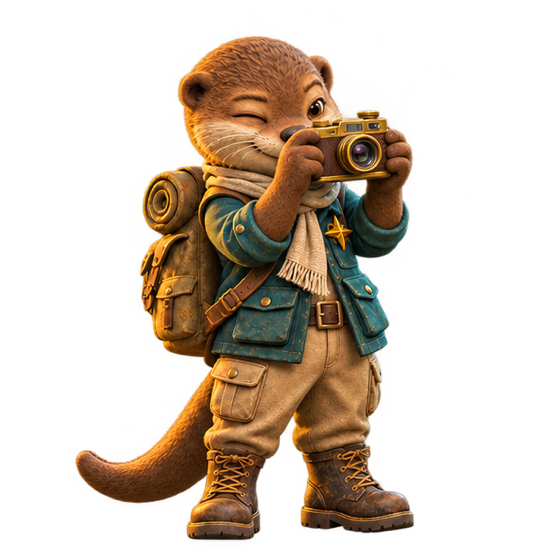
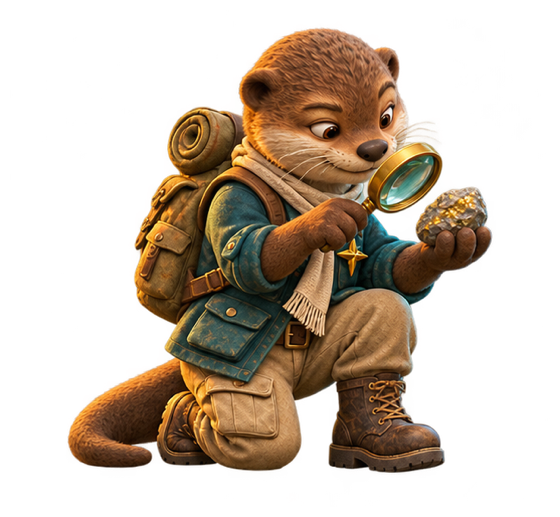

Curiosidades reales del mundo
El planeta es
más insólito
de lo que crees.
Lagunas de colores, cuevas de cristal y animales que no parecen reales. Cada día, un lugar o una criatura que te hará decir «¿eso existe?».
- Vídeos nuevos cada día
- Fotos con licencia y fuentes
- Hecho en República Dominicana
Síguenos
Un viaje,
cuatro redes.
El mismo planeta increíble, en el formato de cada red.
Qué hacemos
Contado con rigor,
no con cuentos.
Lugares imposibles
Lagunas de colores, cuevas de cristal, géiseres y paisajes que parecen de otro planeta. Te llevamos a cada rincón en menos de un minuto.
Animales sorprendentes
Criaturas que no parecen reales, y lo que la ciencia sabe de ellas. Siempre con un giro que no esperabas.

Verificado, de verdad
Cada vídeo usa fotos con licencia, acreditadas, y cita sus fuentes. Si no está comprobado, no sale.

Para marcas y destinos
Tu lugar, visto por
miles de curiosos.
Mostramos experiencias a un público curioso, sobre todo de República Dominicana, México y Estados Unidos.
Un vídeo, cuatro redes
Tu lugar o tu experiencia, en un vídeo publicado en YouTube, Instagram, TikTok y Facebook.
Enlace a tus reservas
Tu enlace en el comentario fijado y en el perfil, donde la gente lo busca.
Resultados claros
Te enviamos las vistas y la interacción de cada publicación.
¿Hablamos?
Escríbenos por mensaje directo y te preparamos una propuesta a la medida.